01
Free home-based care
Professional nursing and community health care support delivered in an integrated, community-based way.
Serving communities with dignity
In the Public's Interest is a non-profit organisation working with the Department of Health’s Integrated Home Based Care & Wellness Services Programme in Athlone and greater Cape Town.
Professional nurses. Community health care workers.
Support that meets people where they are.
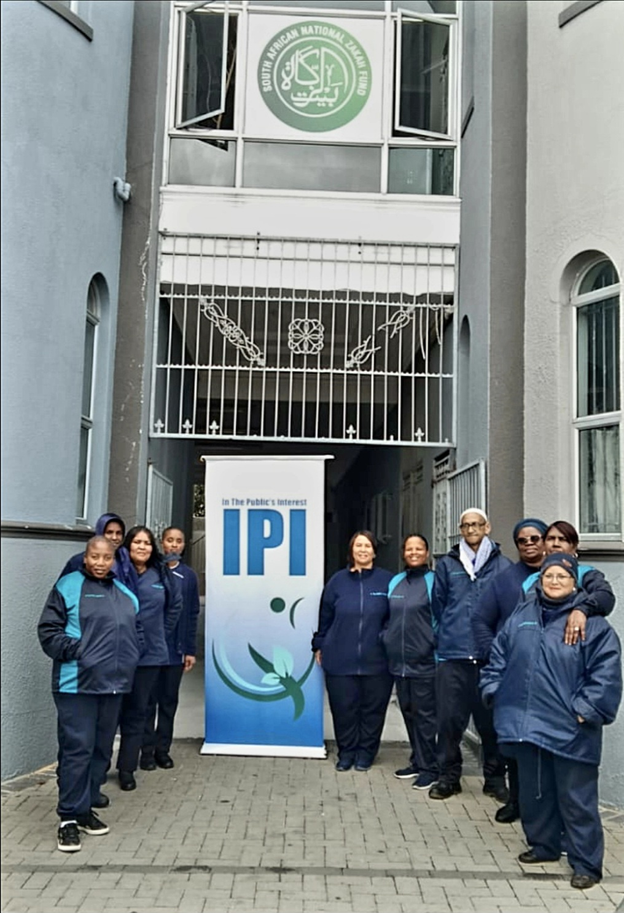
Our organisation
IPI provides free home-based care services in an integrated manner and identifies health-related gaps, needs, and trends within the community.
The mobilisation of resources and employment opportunities adds to our ethos of empowerment and a healthier community.
Find your local nurseCore services
Our work brings professional support, private care options, and food assistance into one connected community network.
Professional nursing and community health care support delivered in an integrated, community-based way.
Willing home-based care workers for young, frail, or elderly family members in the comfort of home.
We support community nutrition initiatives that help children, families, and vulnerable households access regular, nourishing meals. This includes support for community projects and high school feeding schemes that provide practical food assistance where it is needed most.
Professional nurses & service areas
All numbers are clickable. Tap a card to open WhatsApp with the nurse covering your area.
Sr D Grovers
Professional nurse contact
072 734 5720Sr Nontuthuzelo T Gogela
Professional nurse contact
074 484 1330Sr G Du Plooy
Professional nurse contact
061 042 9551Sr Marilyn Smith
Professional nurse contact
079 215 4199Sr N Khonkwane
Professional nurse contact
068 591 5830Sr L Mankayi
Professional nurse contact
069 281 1496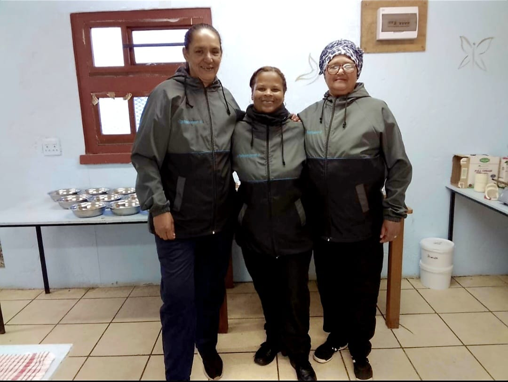
Private care & feeding scheme
For private care, IPI has a database of willing home-based care workers. Day and night shifts are available for ill family members who are young, frail, or elderly.
Enquire about private carePrivate Care WhatsApp: 067 360 5531
Email: privatecare@inthepublicsinterest.co.za
Our people
IPI works alongside local people and community projects across Athlone, Kewtown, Bridgetown, Silvertown and the surrounding Cape Town communities. Friends of IPI support the Feeding Scheme through monthly or quarterly contributions and in-kind donations.
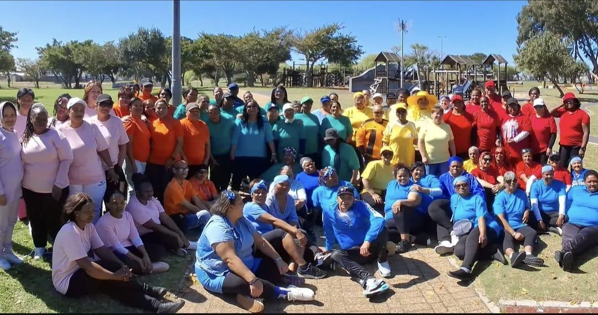
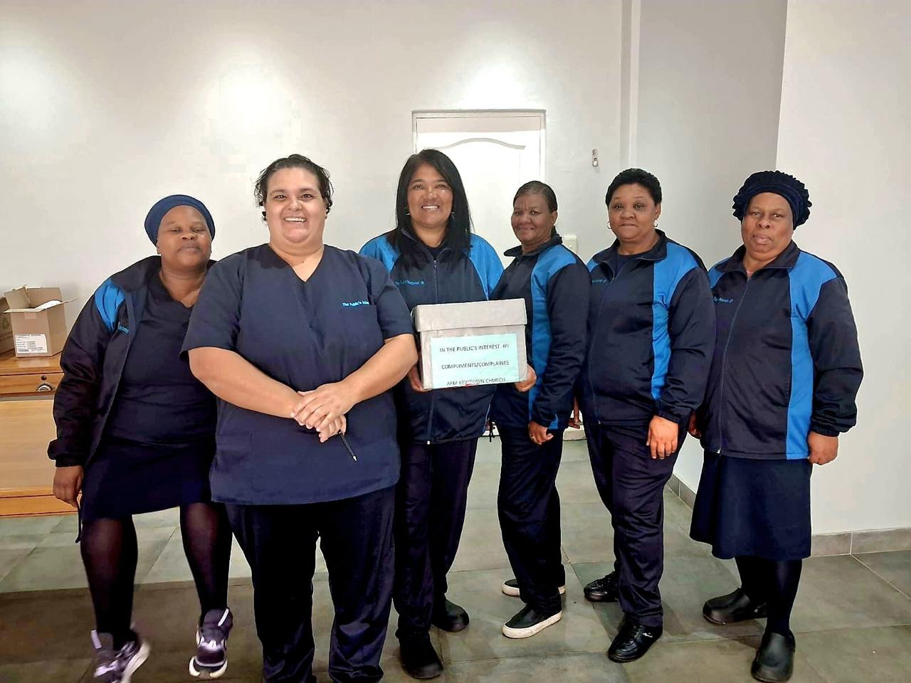
Work we've done
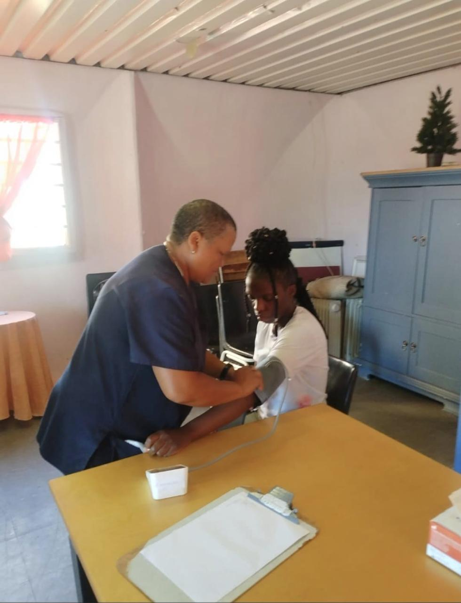
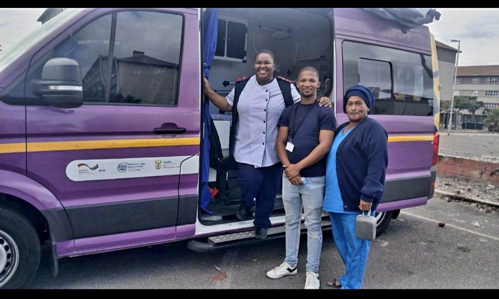
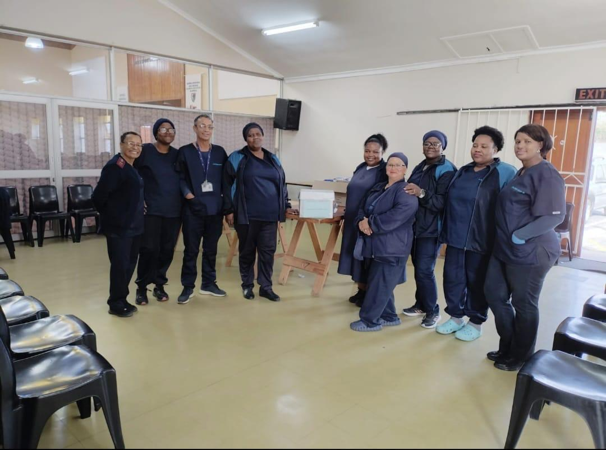
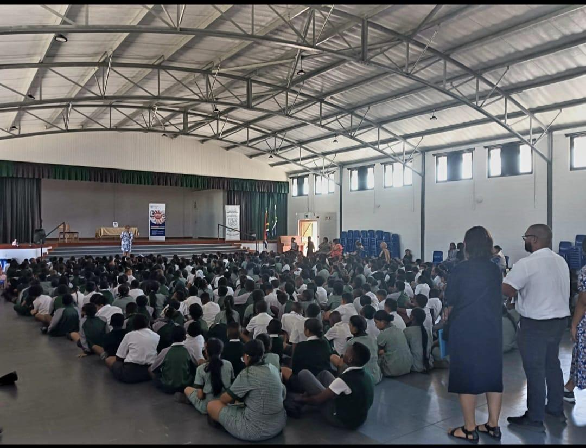
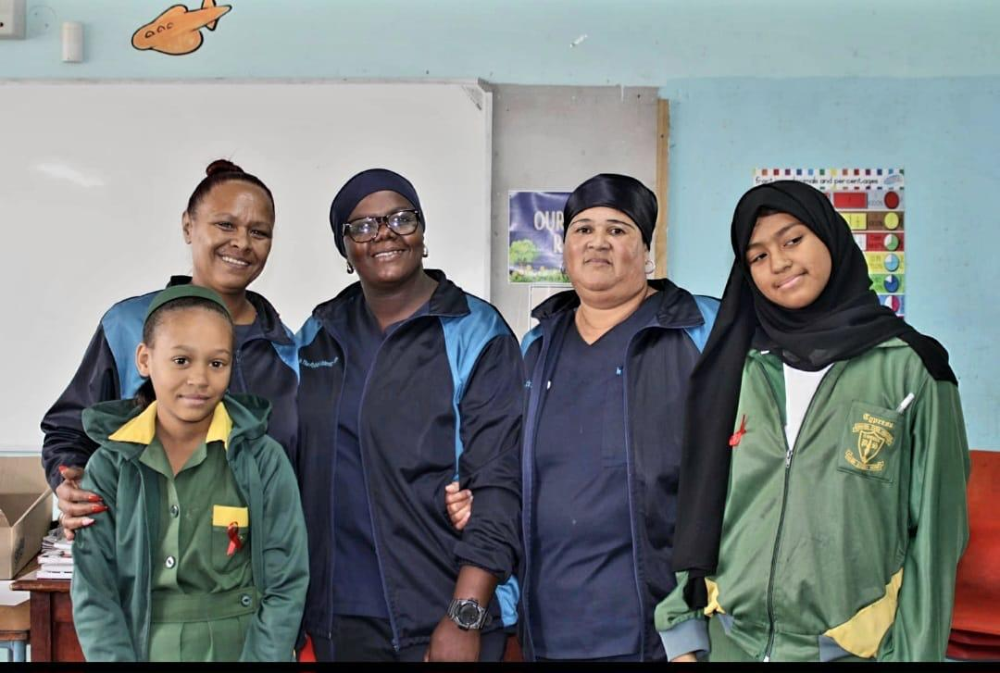
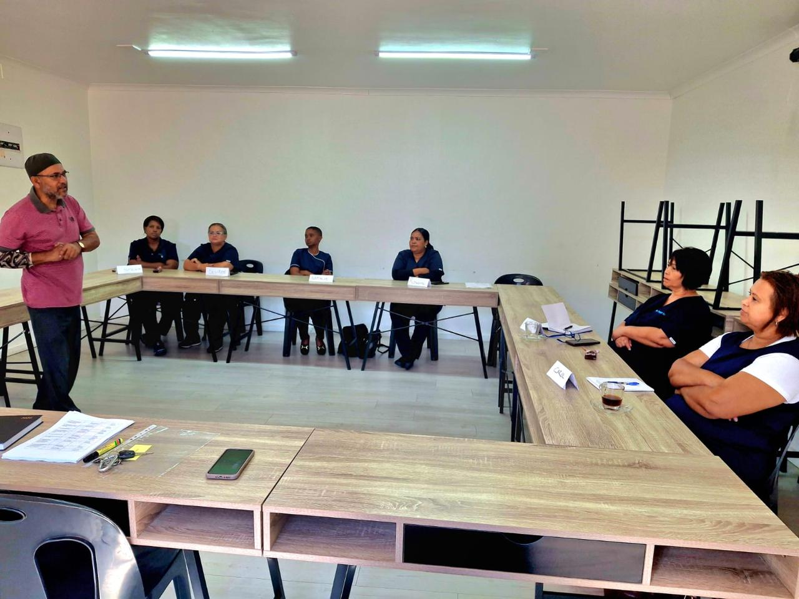
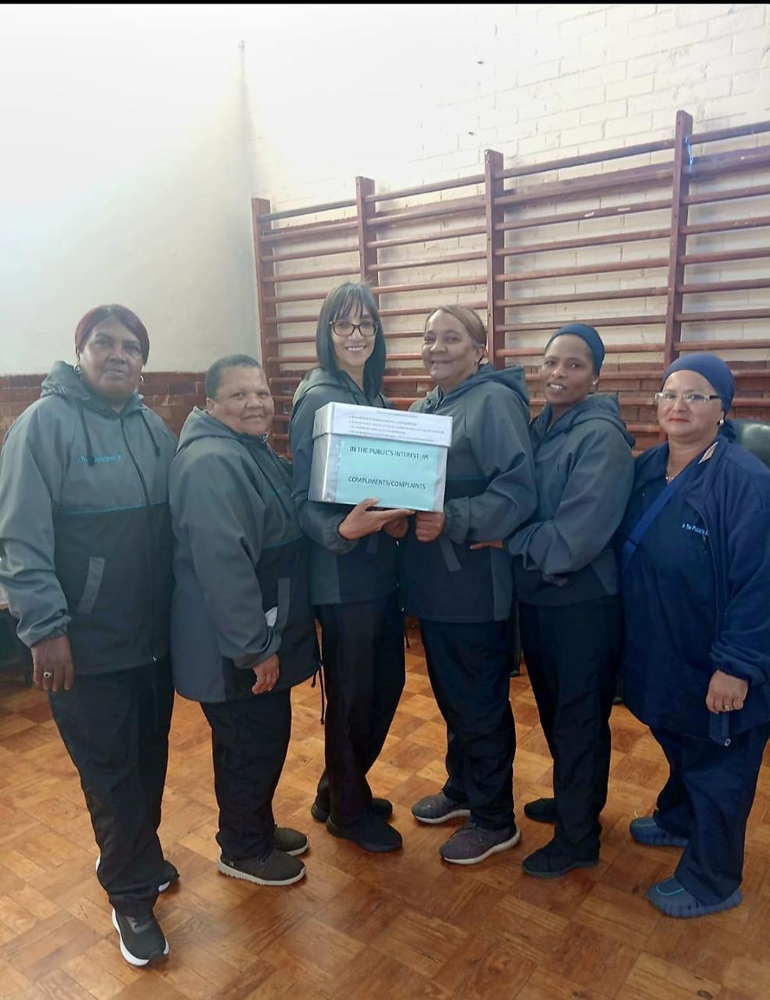
Frequently asked questions
IPI offers three core services in Cape Town: free home-based nursing care in partnership with the Department of Health's Integrated Home Based Care & Wellness Services Programme, private care for young, frail, or elderly family members, and community feeding schemes including support for high school feeding programmes.
Yes. IPI is a non-profit organisation and its integrated home-based care services are provided free of charge to communities. Private care placements, arranged separately through IPI's database of care workers, are a paid service.
IPI's professional nurses cover Athlone and surrounding areas including Kewtown, Free Estate, Gleemoor, Gle Valley, View, Sunnyside, Rustdale, Zwartdam, Crawford, Sybrand Park, Belgravia, Hazendal, Bridgetown, and Silvertown.
Each service area has a dedicated professional nurse who can be reached directly on WhatsApp. Find your area in the Service Areas section and tap the number to open a WhatsApp chat, or WhatsApp IPI's main line on 071 459 1746.
Friends of IPI support the feeding scheme through monthly or quarterly contributions and in-kind food donations. Contributions are turned into practical food support for community projects and high school feeding schemes across Cape Town. WhatsApp 071 459 1746 or email inthepublicsinterest11@gmail.com to get involved.
Yes. IPI keeps a database of willing home-based care workers for private placements. Day and night shifts are available for ill family members who are young, frail, or elderly. WhatsApp 067 360 5531 or email privatecare@inthepublicsinterest.co.za to enquire.
IPI's free integrated home-based care is for people living in the Cape Town communities IPI covers, centred on Athlone and the surrounding areas. The professional nurse assigned to your area is the starting point: WhatsApp the number listed for your area in Service Areas, or IPI's main line on 071 459 1746, and the nurse will explain what support is available.
Yes. IPI's free home-based care is delivered in partnership with the Department of Health's Integrated Home Based Care & Wellness Services Programme, which is what allows the service to be offered to communities at no cost.
Contact In The Public's Interest
For NPO services, WhatsApp our team or email us. For private care, use the dedicated contact below.
WhatsApp NPO services